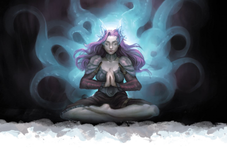

你生来便和一位异界存在紧密相连。你具有你从未度过的生命中的记忆，你记得与邪魔交战的幻觉和与黑暗永无止境的战争。当你入眠时，你并不会像其他人一样进入梦境，但你常常会带着一种使命感或新的想法醒来。你见证了这个世界遭受的伤痛和苦难，进而知晓光芒大道犹存――但怪物们光外阴影之中伺机而动，无面的仇敌自你出生起就无时无刻不在将你追猎。
你是否会接纳自己体内的灵魂并将它的抗争视为你毕生的事业？你是否会挺身而出对抗黑暗，即使那会引起黑暗梦境之中许多只眼睛的注意？或者你是否会无视身体里的声音，并试图过自己的生活？

离梦人起源Kalashtar Origins
梦灵们是噩梦的精魄。但就像天使也可能堕入邪恶一般，梦灵们也可能会向往善良。数个世纪以前，一小群梦灵转而与伊尔-拉什塔瓦（il-Lashtavar）――支配着达・库尔的邪恶力量为敌。黑暗梦境在梦境之间追捕他们，希望能杀死并捕捉这些灵体，试图将他们杀死或捕获。走投无路之时，这些叛逆的灵体抵达了艾伯伦，并在一群艾达尔僧侣的心灵和身体之中找到了安身之所。六十七个灵体逃离了黑暗梦境的追捕，而最初的离梦人就此诞生。
作为离梦人，你是这些僧侣们的后裔。一位梦灵和你的血脉相系。它存在于你所有活着的血亲们的心灵与梦境之中，只要你们尚存，梦灵就一直存在。而当你的血脉断绝，它灵体也会迷失...因此，黑暗梦境总是乐于置离梦人们于死地。
离梦人诞生于数个世纪以前，并从艾达尔散落到世界各地。你的背景是什么样的？是什么让你踏上了冒险之路？你是在寻找对抗黑暗梦境的盟友，还是在追寻一个你自己的目标？
艾达尔离梦人Adaran
离梦人曾于索隆娜，在艾达尔的遥远土地上诞生。而今天，瑞依卓尔帝国统治着索隆娜，以数不尽的帝国大军将艾达尔围困。艾达尔的僧侣和牧师们相信，与梦启者和伊尔-拉什塔瓦的战争不会依靠武器获得胜利；相反，祈祷和受到导引的冥想最终会让平衡自黑暗往光明倾斜。艾达尔的离梦人们很少毫无缘由地采取直接的行动。如果你是一位艾达尔人，是什么原因迫使你离开修道院，去对抗瑞依卓尔无尽的封锁？是长老们交给你一项特别的使命，还是你的梦灵灵体驱使你前往遥远的国度？隐士背景可以很好的表现一个来自遥远而危险的土地的修行者。
在所有这里提到的离梦人起源中，你可能与你的梦灵有着最为强烈的联系。艾达尔的离梦人们是苦修者，他们纪律严明，专注于光芒大道。你被教导要去为苟且于恐惧中的人们带来激励，为迷失于黑暗中的人们带来启悟；你是否能将这些谆谆教诲与你的冒险相调和？如果你是在修道院生活过一段时间之后再来到科瓦雷，你会不习惯语犯罪和贪婪。像萨恩这样的城市中的混乱是否会让你迷失方向？
科瓦雷离梦人Khorvairian
在五国的几个大城市中都有着离梦人聚居地，包括萨恩的俯瞰区和费尔海文的白墙区。离梦人偏好居住在靠近彼此的地方，既可以践行他们共同的传统，也能团结起来对抗一切来自黑暗梦境势力的威胁。如果你在这样一个聚居地中长大，你对光芒大道和其他离梦人传统非常熟悉；但城门口不会有瑞依卓尔的大军；你知晓梦中的黑暗是一种威胁，但它对你来说不过是影中的幽灵。
许多离梦人仅仅是希望通过日常的行为，比如表达善意、同情和调解争端来传播光明。而另一方面，在与黑暗的斗争之中，一些科瓦雷离梦人走上了残酷的道路。阴影守望者们不相信只依靠仁慈和祈祷就能与敌人战斗。这一组织的成员们希望寻找出腐化的根源，并将其毫不留情地消灭。虽然一位阴影守望者是专注于对付黑暗梦境的特工，他们也可以追猎任何超自然或其他的邪恶力量。
作为科瓦雷的离梦人，你能够对任何背景都产生共情；无论你是光芒大道的侍僧，贤明的智者，还是活泼的艺人，你都会尽力帮助无辜之人并激励人们的意志。罪犯和骗子将会是不寻常的道路，但密探背景可能会是阴影看守的工作的反映。虽然你不像艾达尔的离梦人那样不食人间烟火，但你仍然会被异界生物的本能所驱使，并带着一种超凡脱俗的气质。
弃儿Orphan
离梦人能够和人类与半精灵繁育后代，而他们的孩子有着同样机会生为离梦人或父母另一方的种族。离梦人极其稀少；即使是在萨恩这样拥有离梦人社区的城市之中，许多人们也只是把他们当做是有着古怪眼睛的人类...或者是某种半精灵，也许？没准这是一种新的时尚？
因此，在科瓦雷的确有没有在离梦人双亲指导下长大的离梦人存在。弃儿们通常不会意识到自己的血脉和梦族灵体的本质――梦灵们试图通过梦中的景象和本能来进行交流，但由于对其来历缺乏了解，弃儿们很少能够理解他们与梦灵的联系。尽管如此，梦灵是他们不可分割的一部分，敦促他们走向光明――而事实上大部分弃儿都追随着这条道路。一位选择了更黑暗的人生道路的离梦人弃儿会和他们灵体赋予的本能不断斗争。这样的离梦人可能会深深陷入不知所措中，而这会表现出压力、易怒、抑郁和或是难以预料的行为。
一位离梦人弃儿能够追随任何道路。无论是无私的利他者，还是恶徒，或是介于两者之间，你可以和你的DM探讨与梦灵联系的影响。尽管你对其真实本质一无所知，但你是否遵循了它的指引？你是否认为它是扭曲了你的思想的诅咒或者幽灵，让你陷入与自己的斗争之中？你有没有发自内心地想要抑制它？你最终接受了你的离梦人本性，还是更偏爱保持这样的状态当一个局外者？
梦灵链接The Quori Bond
作为一位离梦人，你是一条灵体谱系的一部分，传统上你的名字会反映出这一点。例如，兰哈雷斯（Lanhareth）和明哈雷斯（Minhareth）都是哈雷斯家族的离梦人。你的谱系在出生之前就已经确定，与父母中的一方相连。如果你是出生在瓦克翠和哈雷斯谱系中的离梦人，你只会继承一方的联系。而既然你不会同时继承两边的梦灵的链接，你就不会是一半哈雷斯和一半瓦克翠家族的成员。你的血统会影响你的外貌和特征，包括眼睛颜色、头发颜色和其他方面。当你遇到一个与你同一谱系的离梦人时，你们会在彼此身上看到共同的特点，也会感受到更深的联系；某种程度上，你们本为一体。
梦灵链接存在于更深的层面。你的梦灵不会悬浮在你的肩头或者在你的耳中低语。相反，它存在于你这一谱系所有离梦人的集体潜意识中，塑造并引导着你们所有人。你会将之认作是一种本能，在你从未做过之事――一场梦之国度的战争的记忆中。当你入眠时，你不会做梦，但这种链接会越来越牢固。你的梦灵甚至会以幻觉来引导你。随着时间和训练，你可以强化这样的链接，学会如何更清晰地聆听它的心灵之声。在第六章中的梦灵链接专长便是一种反映强化之后链接的方式。无论如何，这取决于你如何扮演你们的关系。虽然梦灵并非一个可以在对话中做出反应的活跃存在，但一些离梦人的确会将它当做对话的对象像它说话，与梦灵交谈是一种整理他们自己想法的方式。而另一些离梦人则对它在潜意识中的存在感到安心，因为梦灵始终与他们同在。有的离梦人――尤其是弃儿们――拒绝承认这一点，他们认为自己的思想只属于自身。
在创造离梦人角色时，意识到你与哪一种梦灵相连十分重要。你能够通过扮演来发展你的连接，但它也能由你选择职业的能力和法术来反应。每一种梦灵都与特别的情感有关。邪恶的梦灵以这一情感为食，也使用它们来操纵凡人。对你而言，你可以知晓如何让其他人产生某种情绪，或者你曾经以非常深刻和强烈的方式经历了这一情感。或者你学会了如何抑制这一情感，而这就是你的力量来源。无论你做出怎样的选择，它都能通过你的谱系反应出来。如果你选择瓦克翠是一位三眼梦灵，而你依靠它燃烧的怒火来点燃你自己的野蛮人狂暴，而你见过的其他瓦克翠离梦人也都是野蛮人或者易怒的战士。
在《艾伯伦：自终末战争中复苏》中存在三种梦灵，而第四种常见的梦灵，三眼梦灵的数据则可在第八章中找到。如果你希望创造一个来自其他梦灵谱系的离梦人，你可以和你的DM讨论决定。
三眼梦灵Du’ulora
邪恶的三眼梦灵是愤怒和冲动的精魄。在达・库尔，他们创造出的梦境会引发不和与仇杀，刺激凡人走向暴力和复仇。你的三眼梦灵灵体已经转而对抗黑暗，但愤怒依然是它的领域，也是你与生俱来的力量。你要如何表达这一特点？作为一位吟游诗人，你可能擅长嘲讽敌人，利用他们的愤怒来对抗他们，驱使他们做出鲁莽的行为。作为一位野蛮人，你可以说灵体是你狂暴的来源。作为一位圣武士，当你痛击你的敌人的时候，你能够释放出灵体的愤怒。你可能大部分时候都平静随和，但使用链接的力量时，你会表达出强烈的愤怒。
关键在于，即使它是一位愤怒的灵体，你所链接的三眼梦灵也已经皈依了光芒大道。当你向敌人宣泄愤怒时，你也许会陶醉其中，但它依然驱使你为崇高事业而战。你愤怒只是一种工具，你不应该让它将你拽入黑暗之中。
窃梦梦灵Hashalaq
窃梦梦灵是诱惑者和骗子。以怀疑和欲望为食。他们是梦灵中的密探和学识大师。与窃梦梦灵相连的离梦人能够成为优秀的吟游诗人；逸闻学院同时反映出了你对知识的热爱和你让敌人陷入困惑的能力。窃梦梦灵也造就了优秀的邪术师，你的灵体给予的诱导话术魔能祈唤和允许你魅惑敌人的能力。作为与窃梦梦灵相连的离梦人，你需要考虑你是长于欺骗，还是选择坦诚待人，专注于激起积极的情绪――你是更喜欢以狡诈来欺骗他人还是以同理心说服他们？窃梦梦灵离梦人们通常会遵循后一条道路，利用他们的知识来指导伙伴，并戳穿对他们同类而言司空见惯的骗局。
百目梦灵Kalaraq
百目梦灵是骄傲和野心的精魄。作为梦灵中的天生领导者，它们通过纯粹的魅力和意志的力量统治其他梦灵。作为百目梦灵的离梦人，你一定有着自己的远大抱负。你善于让他人追随于你，也会毫不犹豫地采取大胆的行动。你可能会做一位一马当先的圣武士，或者强化盟友的牧师，或是一位令敌人屈从于你意志的迷惑学院吟游诗人。百目梦灵也被称作“眼缚者”，能够束缚并吞噬虚弱的灵魂；因而你也可以是一位擅长召唤或束缚精魂的邪术师或法师。
百目梦灵在梦灵中最为稀少而强大。百目梦灵塔拉太是叛逆梦灵们的领袖，而她的谱系是唯一被完整黑暗梦境所完全摧毁的灵体谱系。塔拉太自己的命运则无人知晓。百目梦灵血脉只只有两条幸存，而作为一名百目梦灵离梦人，其他人可能会期待你的大胆领导和指示。
螯爪梦灵Tsucora
螯爪梦灵以恐惧为食并打造出最经典的噩梦。作为一名螯爪梦灵离梦人，你对恐惧有着深刻的理解。这对低语学院的吟游诗人和超体宗的武僧（见第六章）是非常合适的基础，他们能够以言辞和触碰播撒恐惧。此外，你也能成为一位旧日支配者的邪术师，以恐惧术fear和不谐低语dissonant whispers来折磨你的敌人。另一方面，你也能选择成为一位鼓舞人心的牧师，帮助你的伙伴们对抗恐惧，利用你对恐惧的了解来强化他们的决心。螯爪梦灵离梦人常常表现得冷酷而令人敬畏，但尽管对噩梦无比了解，你仍然是在朝着光明前进。
灵能力量Psychic Power
离梦人以他们的灵能天赋为人所知，但除了他们的心灵链接能力，在离梦人角色身上该如何表现这一点呢？在5E中他们如何使用精神的力量？第六章中提供了心灵领域牧师和两个离梦人种族专长。此外，角色也有一种天生的精神自律――一位离梦人武僧能够将气作为心灵力量的表现，而第六章中的超体宗宗派则是以此为基础。但你额也可能在不改变机制的情况下调整一个职业的风味。比如考虑如下的想法。
吟游诗人Bards
许多离梦人通过激励他人来与邪恶作战，而诗人则对此有着很好的基础。尽管诗人激励被描述为“热血的音乐和话语”，但你能将你的所为描述为和灵能天赋有关。你可以将你的激励描述为一个伴随着灵能激增的咒文，而非一首魔法的歌曲。当你使用低语诗人的恶毒言辞或逸闻诗人的语出惊人能力时，这可以被很容易地反映你操控心灵的力量。此外，你的施法能力机制上是魔法，也能被法术反制，并且同样在反魔法力场antimagic field中无法生效，等等。但你也可以将恶言相加vicious mockery或疯狂冠冕crown of madness描述为心灵的攻击，或者把疗伤术cure wounds描述为了灵能代谢的效果，使用你的意念来缝合伤口。你并不会获得机制上的好处――在使用诗人激励时，你的目标仍然需要能够听到你，即使你使用的是灵能的力量――但没有什么能阻止你的诗人将表现得具有灵能的天赋，而非仅仅是唱着魔法的歌谣。
牧师与圣武士Clerics and Paladins
许多离梦人都献身于光芒大道，尽管这一虔诚的信仰中并不存在神灵，信仰自身也能成为神圣魔法的来源。光芒大道的祭司们说虔信与伊尔-亚纳――必将重生并取代黑暗梦境的伟大之光――的启悟，但他们的力量来自于自己的内心。因此，牧师和圣武士对离梦人都是合理的道路，而你可以在如上面诗人那样在描述法术时加上灵能风味。当你施展命令术command时，你并非在要求受害者向伊尔-亚纳俯首；相反，伊尔-亚纳强化了你的心里，让你将自己的意志投射到目标身上。如祝福术bless这样的效应能反映为持续不断的精神引导，而疗伤术cure wound和类似的法术则可以是灵能代谢效果。你的信仰帮助你集中了精神，但是你的精神产生了这些力量。如果你希望做到更多，第六章中的心灵领域能够让你以心灵伤害代替光耀伤害；这样，你能够将圣火术sacred flame改为心灵的震爆而非神圣的烈火。
同样的概念也适用于神圣之魂术士。你不需要穿着祭司的服饰，但你对伊尔-亚纳的愿景允许你集中你的意志并改变现实。你�E个选择那项感觉像是你在使用灵能力量的法术；当你使用法师之手mage hand时，它能表现得有如心灵遥控产生的动作。
邪术师Warlock
你可以简单地将你的邪术师法术描述为自灵能中产生，而非来自驱使奥术的力量。你的宗主可以是你的灵体。作为一位邪术师，你可能与这位灵体有着格外强烈的联系，而且比你谱系中的离梦人们能看到更加清晰的幻觉；传统上，拥有如此强大链接的离梦人被称为返祖者（atavist）。旧日支配者是一个直接的选项，其许多法术反应了操纵心灵的力量；你能将艾伐黑触手Evard’s black tentacles描述为灵体的造物，或是将艾嘉西斯之铠Armor of Agathys
描述为念动力和结霜能力（cryokinesis）的结合。由于心灵链接能力，唤醒心灵特性会很快被淘汰掉；而DM可以选择将其结合起来，将离梦人邪术师的心灵链接范围增大30尺。如果你将你的梦灵当做光之精魂，天界宗主是另一个合情合理的选择。作为一位咒剑士或任何其他使用刃之魔契的邪术师，你可以将你的武器描述为自噩梦中锻造的锋刃。
如果你希望为你的邪术师添加更多灵能风味，你的DM可能会允许你替换少数法术的伤害类型。比如让魔能爆eldritch blast造成心灵伤害？即使使用默认的规则，你也可以将其扮演为一种远程的念动力爆炸。
|
边栏：创造谱系Creating a Lineage 当你选择一个梦族灵体之后，接下来便是要决定你的谱系，思考你和其他与同一梦灵链接的离梦人有何共同之处。这里有两个范例。 卢拉什太Lurashtai在生命的最初是一位螯爪梦灵。她利用受害者对死亡和亡灵的恐惧，编织着哥特式恐怖的梦境。在这些病态记忆中长大的离梦人会因悲剧而感到舒适，对死亡也毫无畏惧，他们能在别人觉得令人不安或恐怖的事物中看到美丽。作为一个光之灵，她担心不死生物会被困在生命与梦境的循环之外，并削弱这个时代共同的灵魂。因此她的谱系中的离梦人常常被派去猎杀不死生物，令其灵魂得享安息。卢拉什太谱系的离梦人通常肤色苍白，五官鲜明，漆黑秀发如缕缕丝弦；他们通常喜欢红色的服饰。 阿纬斯Aveth是一位窃梦梦灵，在他离开达・库尔之前，操纵与洞悉的能力是他引以为豪的武器。他对凡人选择向善的潜力非常感兴趣，就像他和他的同类弃暗投明一般。阿纬斯谱系的离梦人更喜欢听从自己的直觉，而非他人的精心谋划。他们对战胜潜在叠的敌人并化敌为友有着强大的信心――这可能会带来意想不到的盟友，也可能会让过于乐观的离梦人早夭。阿纬斯离梦人们通常有着暗色的皮肤，黑色的头发。他们偏爱蓝色和海蓝色，并潜意识地讨厌花生。 |